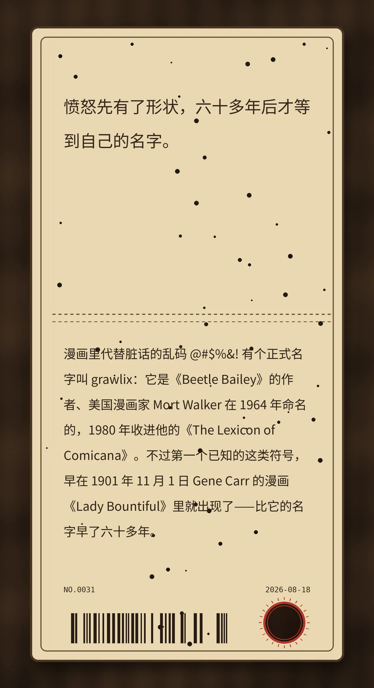

愤怒先有了形状，六十多年后才等到自己的名字。
漫画里代替脏话的乱码 @#$%&! 有个正式名字叫 grawlix：它是《Beetle Bailey》的作者、美国漫画家 Mort Walker 在 1964 年命名的，1980 年收进他的《The Lexicon of Comicana》。不过第一个已知的这类符号，早在 1901 年 11 月 1 日 Gene Carr 的漫画《Lady Bountiful》里就出现了——比它的名字早了六十多年。
b1fe762d7a937782冷知识由执笔的模型自行查证。逐条断言、来源与所引原句存档在纯文字副本里，未经程序逐字校验，留作事后核实。